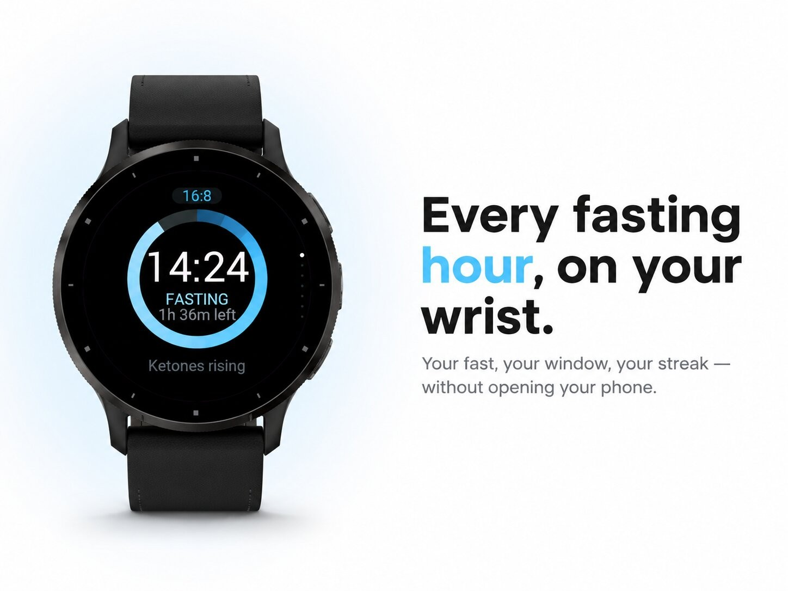
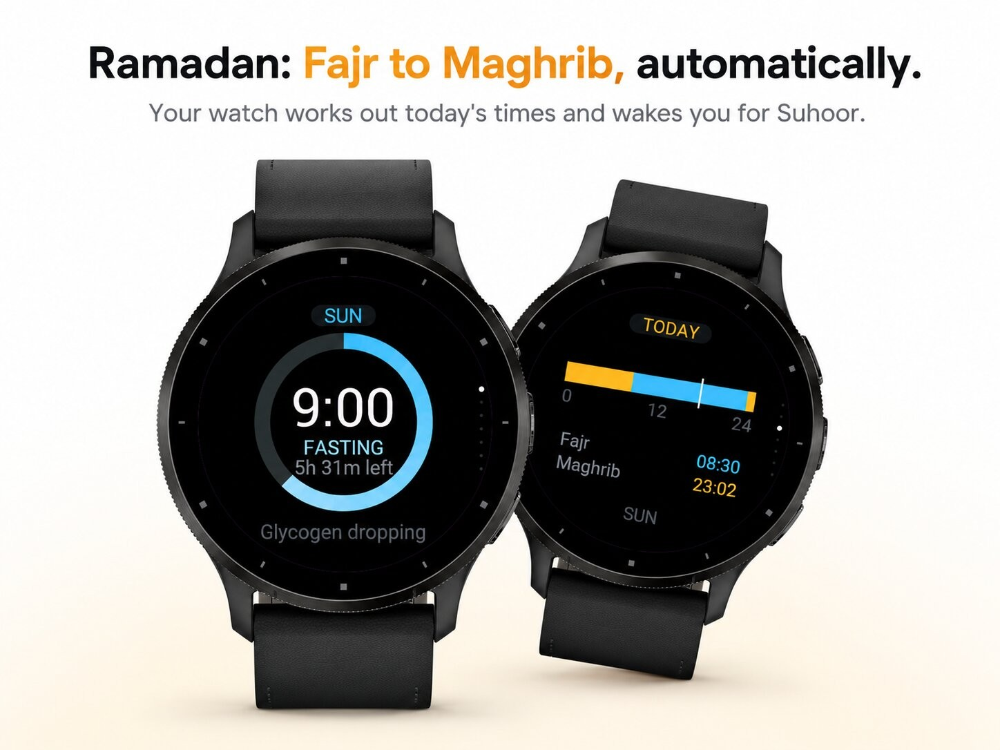
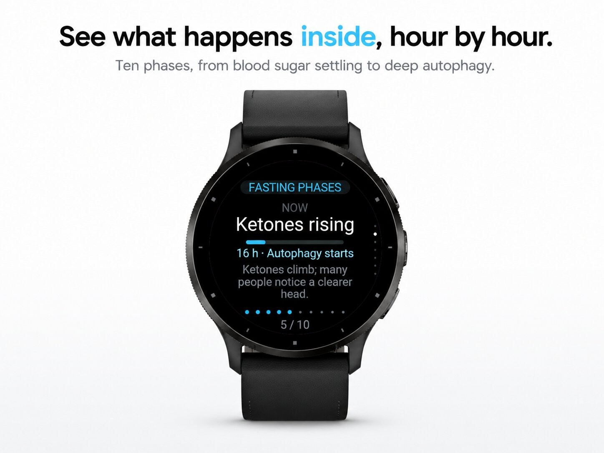
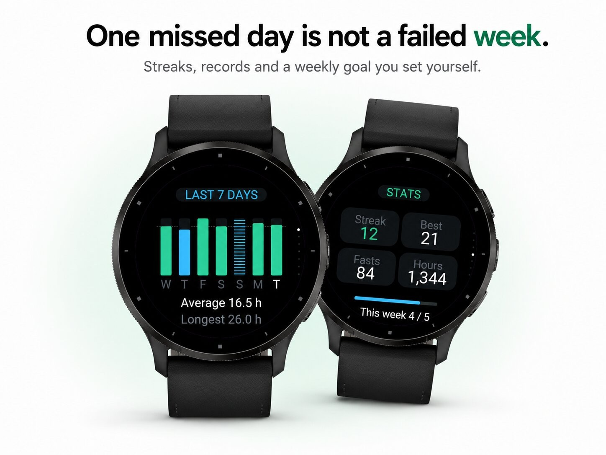
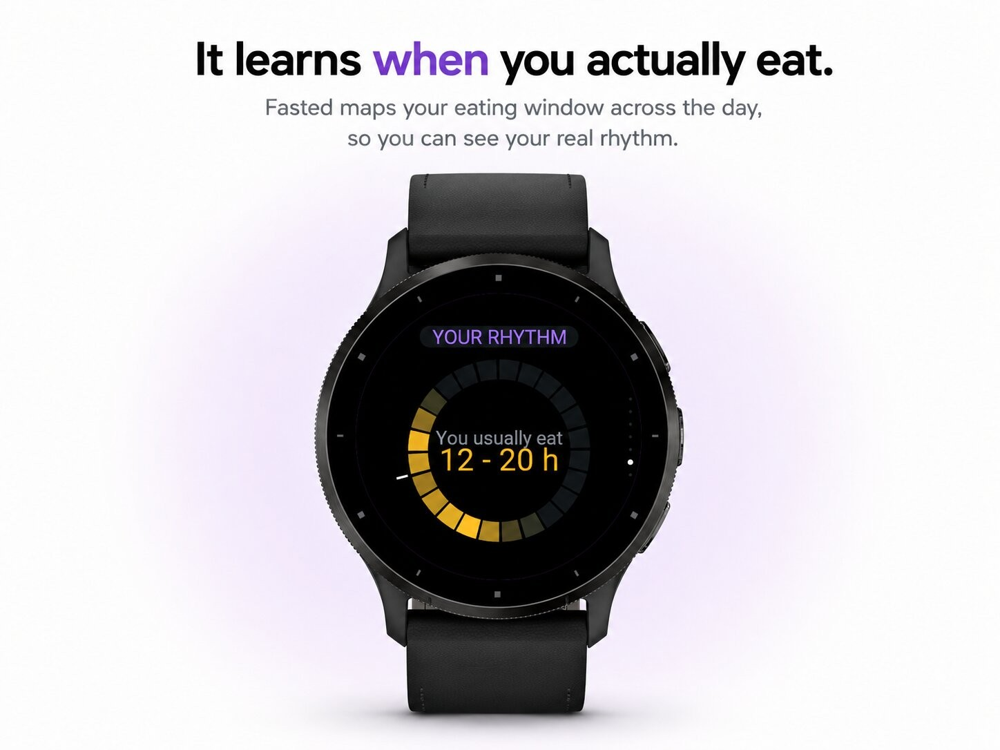

Health & habits · Device app
Intermittent fasting timer, from 16:8 to Ramadan.





Fasted turns intermittent fasting into one clear number on your wrist: how long you have been fasting, how far you are from your goal, and what your body is doing right now.
Press START and the ring fills toward your target. Ten fasting phases explain what changes along the way, from blood sugar settling to deep autophagy. When you reach your goal your watch buzzes, and it warns you in time before your eating window closes.
Switch on auto-start and auto-stop and the app follows your schedule, even while it is closed. Everything is set on the watch itself — protocol, schedule, alerts, weekly goal — so you rarely need your phone.
Interface in English, Dutch, German, French and Spanish. Everything stays on your watch: no account, no internet connection, no data sent anywhere.
Fasted is not medical advice. Talk to a doctor before fasting if you are pregnant, diabetic or taking medication.